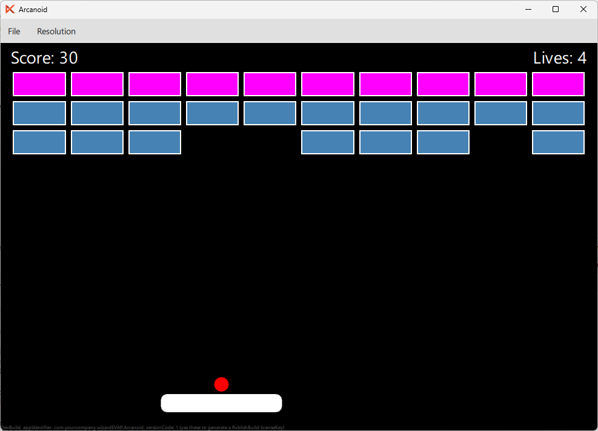

This tutorial walks you through building a classic brick-breaker game from scratch using Felgo and Qt Quick. By the end, you will have a fully playable Arcanoid game with a paddle, a bouncing ball, and destructible bricks.
This tutorial is split into multiple parts:
